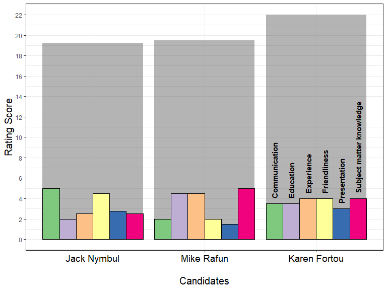

Wrangling with dplyr
Becoming the Critic.
My Attempt at a graphic

Review Team Lead Responsibilities
Present Case Studies
- Put a link to the .md file in an issue specific to that Case Study on your repository
- This signifies that you believe it is “complete” and ready for review
- Reviewers will go to your repository and click the link in the issues during the review
- Do NOT simply share your screen
- Each person should review 2 other Case Studies.
- Leave comments on the issue. Coordinate during the group meeting who will be reviewing who (probably won’t have time to review them all)
- You should respond to the issues left on yours: either fix it or explain why you didn’t _ Then, close the issue
Tracking Task Completion
- Put a link to the .md file in an issue for that task
- This signifies that you believe it is “complete” and ready for review
- Myself or TA’s will either “close” the issue - meaning it is complete - or leave feedback about what remains incomplete
Special Request
Please indicate the number of hours it took you to complete the Task or Case Study in the issue where you post the link (or in the readme.md file?)
Don’t forget to push all past homeworks to github
Being Readings
Checking-in / getting help
Virtual Questions and Support
Build skills and experience from classes. Don’t just take classes!
How is slack working?
Stack Overflow for general coding questions
Github working correctly?
Getting the Routine Down
- You should push at least three times a week
- Being Readings in Perusall/Ilearn
- Writing issues in Github will take place on Tuesday
- You should address and close the issues within a week so you don’t fall behind (the sooner the better)
Data Wrangling with dplyr
Data Manipulation Verbs
filter-sort-select-mutate-
Data Manipulation Verbs
filter- filter your data to a smaller set of important rows.sort- Organize the row order of my dataselect- select specific columns to keep or removemutate- add new mutated (changed) variables as columns to my data.
Data Manipulation Verbs for Summaries
summarise-group by-
Data Manipulation Verbs for Summaries
summarise- build summaries of the columns specifiedgroup by- divide your data into groups. Often used withsummarise
Class Activity #1: Data verbs


Class Activity #2: Data verbs


Practice reading code
With your group, write this code out in an English paragraph.
Practice writing code using dplyr package
Use filter(), arrange(), select(), mutate(), group_by(), and summarise(). With library(tidyverse) tackle the following challenges.
Take turns in the driver’s seat.
- Arrange the
irisdata bySepal.Lengthand display the first six rows. - Select the
SpeciesandPetal.Widthcolumns and put them into a new data set calledtestdat. - Create a new table that has the mean and standard deviation for petal width for each Species.
- Read about the
?summarise_all()function and get a new table with the means and standard deviations for all the variables for each Species. - Look at the examples in the
summarise_all()help file and see if you can find other use cases for thesummarise_ormutate_functions.
Additional functions I often use in mutate
Changing the type of variable
Discuss with your table, what does this code do?
?mtcars
as.factor(mtcars$am)Changing the type of variable (2)
Use this code to create the money object
money <- c('4,554,25', '$45', '8025.33cents', '288f45')- Apply
as.numeric(money)and talk with your table about the output. - Apply
parse_number(money)and compare the results.
Scan the dplyr cheatsheet
https://github.com/rstudio/cheatsheets/blob/master/data-transformation.pdf
Learn about the following functions using the cheat sheet and ?. Try to create a working example
- lag()
- distinct() and n_distinct()
- min_rank()
- pull()
The Grammar of Graphics
Class Activity, 30 minutes
Run this code to open a fill-in-the-blank file to be completed with your team
#install.packages("downloader")
downloader::download("https://byuistats.github.io/M335/presentations_class_palmer/day_5_files/day_5_class_practice.R", destfil = "script5.R", mode="wb")
file.edit('script5.R')This is also available in I-learn, this week’s module
Zooming in on the data
filter the dataset prior to graphing
scale_*_continuous(limits = c(min, max))
coord_cartesian()
coord_cartesian adjusting the window but keeps all data when calculating stats (like a regression line)
coord_flip()
Especially helpful for making vertically oriented barplots or boxplots horizontal
ggplot2 Cheat sheets
Data Ingestion (Task 5)
Data formats
R can read in data from any format. The following packages will provide most of the functionality we need.
library(readr)(loaded with tidyverse)library(readxls)library(haven)
Data Import (task 5)
What are the key differences between
read.csv()from base R andread_csv()from readr in the tidyverse?read_csv is much faster
read_csv doesn’t convert strings to factor
read_csv doesn’t use row names or munge column names
{kind=link}
parse_ commands
Use this code
money <- c('4,554,25', '$45', '8025.33cents', '288f45')- Apply
as.numeric(money)and talk with your table about the output. - Apply
parse_number(money)and compare the results.
Using read_csv() with parsers
- Run this line of code below
- Look at the errors (
problems(challenge)), thehead(), andtail()of yourchallengeobject. What formats should they be? - Now review 11.4.2 of our textbook and
?read_csv()to fix the read in.
Scripts (used in Task 6)
.rmd files are for reports that also include Rcode. It is reproducible and easily updated
script files (.R) are simply code and comments.
You should be familiar with both.
Bonus: So what’s an .md file?